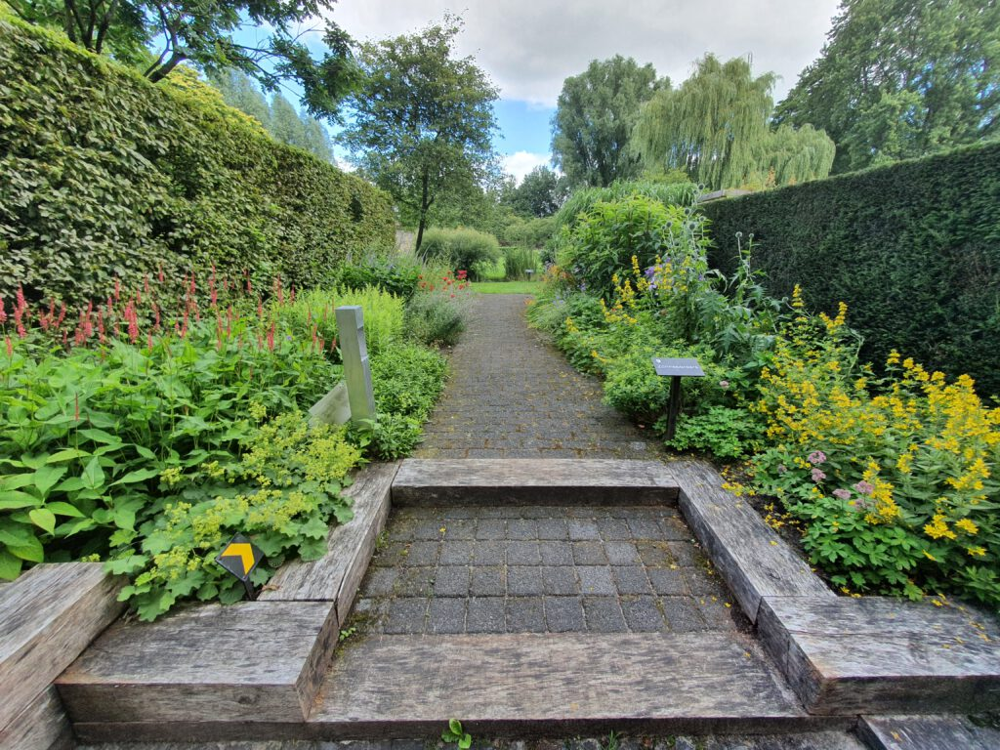
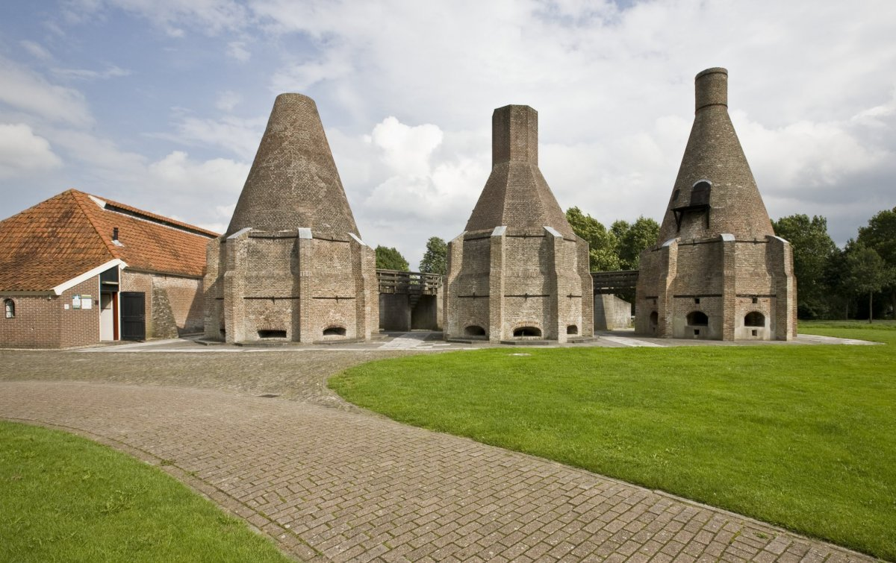

Feitjes over Dedemsvaart
- Het dorp Dedemsvaart kent een aantal historische landhuizen en is vernoemd naar Baron Van Dedem.
- Op het mysterieuze Kalkoventerrein vind je drie gerestaureerde kalkovens, een leshuis, een authentiek turfschip en een gashouder die tegenwoordig fungeert als theater.
- Dedemsvaart is ook bekend door de botanische tuinen van Mien Ruys.
- Het dorp Dedemsvaart is ontstaan ten gevolge van de aanleg van het kanaal De Vaart en de vervening van de omliggende gronden die erdoor mogelijk werd in de eerste helft van de negentiende eeuw.
- De Vaart was een 40 km lang gegraven kanaal dat liep van Hasselt tot aan Gramsbergen. In 1848 werd de administratie gevestigd in Dedemsvaart dat uitgroeide tot het belangrijkste dorp van de gemeente.
Attracties

De Tuinen van Mien Ruys zijn een reeks van 28 stijltuinen van de internationaal bekende Nederlandse tuinarchitecte Mien Ruys. De tuinen bevinden zich in Dedemsvaart, de geboorte- en werkplaats van Mien Ruys. Ze zijn door haar aangelegd volgens zowel oude als nieuwe tuinideeën en beplant met uitgebalanceerde combinaties van planten.

Baron van Dedem liet bijna tweehonderd jaar geleden het kalkovencomplex bij de entree van Dedemsvaart bouwen. In de ovens verbrandde men schelpen tot schelpkalk. Op het huidige complex staat onder meer het leshuus. Daar kun je allerlei materialen bekijken, die met de vroegere kalkbranderij te maken hebben. Ook is er een oudheidkamer ingericht.